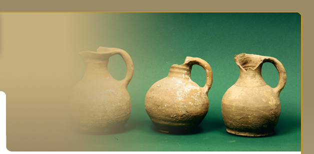
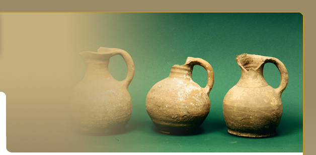
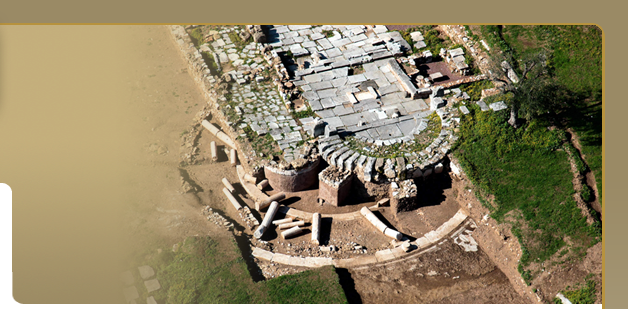
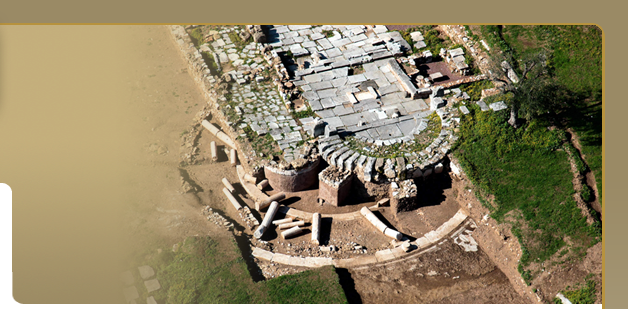
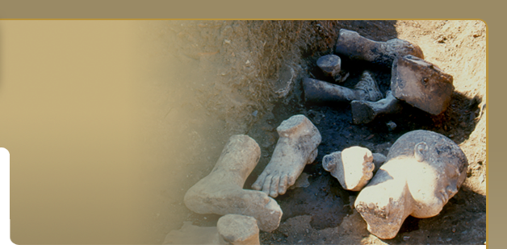
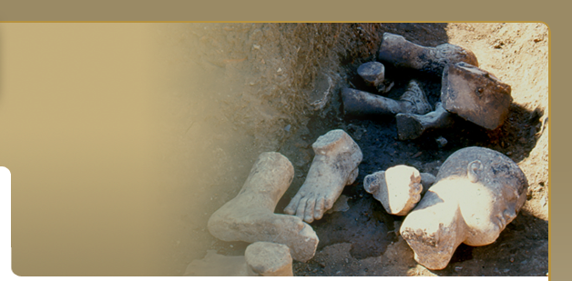

Contribution of inscriptions to the study of history of Ancient Messene
Everything we happen to know through Pausanias and other literary sources is not only corraborated but often also completed thanks to the evidence of inscriptions. Pausanias f.e. notes among others the existence of the sanctuary of Demeter and the statues of Dioscouroi Castor and Pollux. Excavations revealed the remains of this sanctuary identified on the evidence of a bronze shield of the late 4th. c. B.C. bearing the inscription: "KALLIPIDAS AND HIS COMPANIONS DEDICATED (the shield) TO POLLUX". The architectural complex with the Doric temple in the middle of the courtyard surrounded by the stoas is identified with the sanctuary of Asklepios mentioned by Pausanias thanks to the evidence of two inscriptions: The first one testifies that Marcus Kaesius Gallus treasurer and pro praetor "REPAIRED THE FOUR STOAS OF THE ASKLEPIEION AND THE PEDIMENTS ABOVE THE KAISAREION".

The text testifies for the topographical relation of the Asklepieion to the Kaisareion also called Sebasteion, cult place of Augustus and the "sebastoi" Roman Emperors. A second inscription provided additional evidence for the identification of the Sebasteion: it is a decree of the early 1st c. A.D. dealing with repairs made on the main public buildings of the city; the Secretary of the council (= the prime minister of the city) took care for the erection of the decree stele "near the Sebsteion" where it was actually found. Votive inscriptions reffering to Asklepeius and Hygieia support the identification of the building with the Asklepeion. The rooms along the west wing of the Asklepeion had not a cultic function; they housed statues of gods and heroes of a historical and museological character. The identification of these rooms with those mentioned by Pausanias was made possible thanks to the evidence of a decree inscribed on a stele found in front of room K. The decree, dated in 42 A.D., is a decision of the council of 76 Senators to honour the Secretary Mnasistratos son of Philoxenidas and to erect the stele carrying the decree "near the temple of Artemis". Thus room K is identified with the cult place of Artemis Phosphoros and Ortheia, also mentioned in dedicatory inscriptions (2nd c.B.C.-3rd c.A.D.) found inside it.
The Stadium of the city was recognised already in the 19th century thanks to thanks to its remains visible on the surface , while the Gymnasium housed in the 3 stoas around the Stadium was identified on the evidence of inscriptions: catalogues of ephebes listed by tribes, votive inscriptions to Heracles and Hermes, inscriptions mentioning the construction and repair of the Propylon (Main Entrance) to the Gymnasium.

Inscribed stones also informed us about cults of Messene ommited by Pausanias: as for example dedicatory inscriptions to Apollo Agyieus (3rd c. B.C.), to Apollo Karneios and to Athena Kyparissia. The first sanctuary of Artemis Ortheia was uncovered on a terrace on the NW corner of the Asklepeion and identified on the evidence of votive terracottas and an inscribed pedestal supporting a bronze statuette of Artemis (3rd c. B.C.) NE of the modern village on the slope of Ithome (at a place called Spelouza) Philip le Bas had found in 1844 the remains of an ionic temple. An inscription of the 3rd c. B.C. allowed him to recognize the temple as that of Artemis Limnatis. Two partly preserved inscriptions carry the texts of alliance treaties between Messenians and Macedonians the first (314 B.C.), Messenians and king Lysimachos the second (306 - 281 B.C.).
Decrees of cities like Eretria, Naupactos, Thebes, Demetrias, Smyrna which bestow honours to Messenian citizens for their good services on fair judgement, indicate the connections of Messene with foreign cities from the 4th c. B.C. to the 3rd A.D. Two decrees deal with a proposition of Cefalonians to Messenians to take part in a sacred contest newly established in their island. Another decree (IG V1, 1426) is reffering to citizenship given to 30 riders (horsemen) of a neibouring town who had helped the Messenians probably during the attack of Demetrios Poliorketes to Messene (in 295/4 B.C.). The artistic acvtivity of Damophon was made clear through the decrees of seven cities (Lycosoura, Leukas, Kranioi, Melos, Kythnos, Gereneia and Oiantheia) inscribed on a Doric column in about the middle of the 2nd c. B.C. after the death of the sculptor.
To Messene of the Roman period refer three long texts dealing with the position of landmarks on the frontiers between Messenia and Laconia, to the repair of public buildings and to a tax regulation known as Octobole tax. Abundant are the honorary inscriptions written on bases of bronze statues representing Roman Emperors and high officials. The athletic activities in the Stadium and the Gymnasium are mirrored in the catalogues of the agonothetoi and the ephebes as well as in the honorary inscriptions of Gymnasiarchs and victorious athletes in local or foreign games. Finally, the funerary inscriptions contribute to the study of the topography (location of cemeteries) and the prosopography of Messenian and non Messenian inhabitants of the city. |


 



 



 
